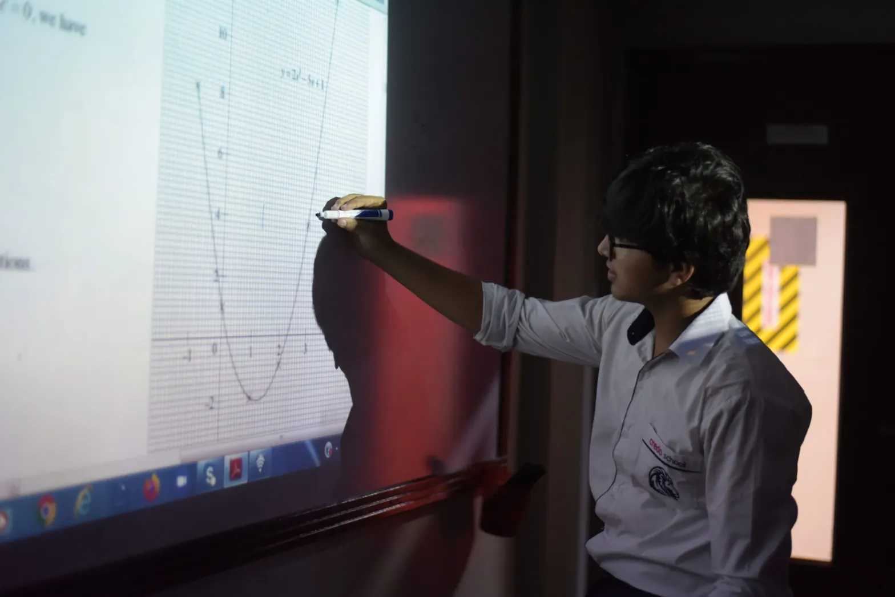
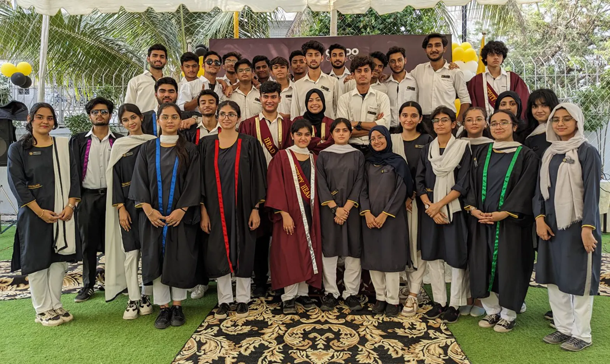

The finest faculty in Karachi
If the person teaching the subject is exemplary, there is simply no need for a student to visit a coaching centre.
Credo is four Cambridge campuses in Block 7, Gulshan-e-Iqbal — one family that carries a child from the first day of pre-nursery to the final paper of A2.
Eight stages, three Credo campuses, one standard. Follow the path a Credo child walks — from age two and a half to university.
Every Credo campus sits within a few minutes of the next in Block 7, Gulshan-e-Iqbal — near Maskan and Disco Bakers.
Credo believes a child simply does not need private tuition when the school provides a durable method of education. Here is the method.

If the person teaching the subject is exemplary, there is simply no need for a student to visit a coaching centre.
Most schools spread O Level over three years. At Credo the syllabus begins from scratch each year, so knowledge is reinforced again and again.
Not simply handed out for home. Only checked answers let a student adjust their effort.
Teachers’ notes, booklets and handouts all year; after the mocks, mandatory subject workshops instead of preparatory leave.
The one thing Credo asks of parents: regular attendance and committed home study. The rest is the school’s promise.
Karachi’s best-known Cambridge teachers, across Accounting, Business, Economics, the Sciences, Mathematics, Computer Science and the Humanities.
Let go of your aims in our hands. Let the “Credo Team” contribute in empowering your child to become a better human being.AVM (R) Syed Razi-ul-Hasan Nawab, HI-MDean & Director · Credo Read the full message
Three houses, one rivalry worth having — debates, sports and challenges that build school spirit on every campus.
The Credo Portal keeps students, parents and teachers on the same page — the daily diary, timetable, assignments, notes, results and urgent notices, synced the moment a teacher posts.
Credo College graduates have been placed at leading universities in Pakistan and abroad.

Early Bird Admissions · Session 2027–29Admissions are open across the network — Preschool & Primary, Middle & O Levels, the Girls Campus and Credo College A Levels.